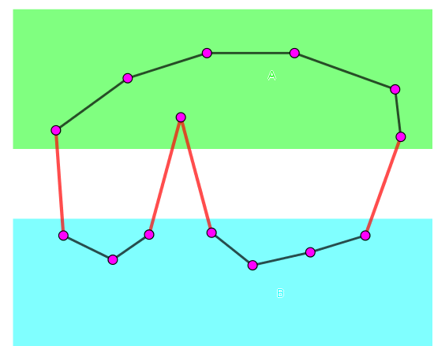

给定一张 $n$ 个点，$m$ 条边构成的连通无向简单图 $G$。现在有 $q$ 组询问，每组询问给出若干条边，询问将 $G$ 删去这些边后是否连通。
第一行包含两个正整数 $n, m$ ($n \leq 10^5; m \leq 5 \times 10^5$)，表示 $G$ 中的点数和边数。
接下来的 $m$ 行，每行两个正整数 $u, v$ ($1 \leq u, v \leq n; u \neq v$)，依次表示描述 $G$ 中的每一条边。
紧跟着一行，包含一个正整数 $q$ ($q \leq 50000$)，表示询问的数量。
接下来的 $q$ 行，每行描述一组询问。其中第一个整数 $k$ ($1 \leq k \leq 15$)，表示要删去的边数，后跟 $k$ 个正整数 $c_1, c_2, \cdots, c_k$ ($1 \leq c_i \leq m$) 分别表示要删去的边的编号 (按照输入顺序，从 $1$ 开始)。
为了体现强制在线，每一轮的询问中，$c_1, c_2, \cdots, c_k$ 均需要异或之前所有回答中为 "Connected" 的个数。
对于每组询问，输出一行，若删去边后图仍然连通，则输出 "Connected"，否则输出 "Disconnected"。
注意到直接维护连通性可能需要用到连通图的一些技巧，并不是很方便，因此这里给出一个基于随机化的权值算法。
首先，我们对原图 dfs，得到一棵生成树 $T$。
若一个图删去若干边 (删的边集记为 $E'$) 后得到的图 $G \setminus E'$ 不连通，则 $E' \cap T \neq \varnothing$。否则 $G$ 中的点依然可以通过 $E$ 相连。
因此，我们对于每条树边 $e$，标记一个集合 $C(e)$，表示所有 (在生成树上) "跨越" 它的边的集合。即
$$ C(e) = \left\{ f \mid f = (u, v) \in G \setminus T; u, v \; 在 \; T \setminus \{e\} \; 中不连通 \right\} $$
注意到集合可以使用 std::bitset 存储，我们把 $C(e)$ 对应的集合也叫做边 $e$ 的权值 (本质是个 $\texttt 0/\texttt 1$ 向量)。再规定非树边 $f$ 的集合 $C(f)$ 是它本身。
下面证明：$G \setminus E'$ 不连通的充分必要条件是，存在 $E'$ 的子集 $F$，$\displaystyle \bigoplus_{e \in F} C(e) = \varnothing$，其中 $\oplus$ 为集合对称差运算，或是权值的异或。这个式子的意思是，$E'$ 中的向量线性相关。
如果不想看证明，可以跳过。
必要性：如果图不连通，设其中一个极大连通分量为 $A$。令 $B = G \setminus A$，我们考虑边集
$$ F_0 = \left\{ (u, v) \mid u \in A; v \in B \right\} $$
我们证明 $\displaystyle \bigoplus_{e \in F_0} C(e) = \varnothing$。由对称差的交换律和结合律，我们只需证明其中每条边的贡献 (出现次数) 为偶数次即可。
由于 $C(e)$ 中的元素均为返祖边，对于其中一条返祖边 $f_0$。考察所有满足 $f_0 \in C(e)$ 的边 $e$，已知这些边构成了一个环。由奇偶分析得，一个环与割集的交一定包含偶数条边，证毕。
充分性：如果存在 $E'$ 的子集 $F$，使得 $F$ 中所有边对应的集合的对称差为空，我们证明 $G \setminus F$ 不连通。
我们对所有的点进行 $1, 2$ 标号。如果一条边在 $F$ 中，则将它的两端标成不同的编号，否则标成相同的编号。
下面证明这样的标号没有矛盾。如果确实这样，又 $F \neq \varnothing$，因此我们就将原图分为标号为 $1$ 和标号为 $2$ 的两个连通块。
如果在某一步标号出现矛盾，比如说对于 $F$ 中的一条边 $(u, v)$，它的两端 $u$ 和 $v$ 被标成相同的编号。由于它能标成相同的编号，因此 $u, v$ 之间存在一条路径，有偶数条边属于 $F$。
加上边 $(u, v)$ 后，得到一个环，它有奇数条边属于 $F$。
另一方面，由于 $\displaystyle \bigoplus_{e \in F} C(e) = \varnothing$，因此考虑一个 "简单环" $C$ (只包含一条非树边 $f$ 的环)，由于只有 $C$ 中的边对应的集合中包含 $f$，因此 $C$ 中有偶数条边属于 $F$。
于是对所有 "简单环"，之中都有偶数条边属于 $F$。从而对应任意环，它也一定有偶数条边属于 $F$，矛盾！
所以假设错误，这样的标号可以进行，从而图不连通。
因此结论成立。至于判断是否存在线性相关的非空子集，可以使用线性基完成。
时间复杂度 $O \left( n + m + q \cdot k n^2 \right)$，肯定要 TLE。
接下来考虑如何优化。
注意到 $k$ 并不是很大，因此我们给非树边 $f$ 确定的集合 $C(f)$ 不需要为 $\{1\}, \{2\}, \{3\}$ (1000..., 0100..., 0010...)，而可以随机一个 $64$ 位 (或 $32$ 位) 权值。然后令树边 $e$ 的集合 $C(e)$ 为所有 "跨越" 它的边 $f$ 的集合 $C(f)$ 的异或和 (对称差)。
此时，只要保证这 $k$ ($k \leq 15$) 条边中的非树边的集合 (std::bitset) 本身线性无关 (从而也构成一组基)，由线性代数的基本知识可知，也是当且仅当存在线性相关的非空子集时，$G \setminus E'$ 不连通。
而我们的所有权值在 $64$ 位整数范围中随机，因此它们冲突 (线性相关) 的概率约为 $1.8 \times 10^{-15}$，几乎可以忽略。
这样，我们就把时间复杂度降为了 $O \left( n + m + q \cdot k \omega^2 \right)$，其中 $\omega \in \{32, 64\}$ 为字长，可以通过。
#include <bits/stdc++.h>
#define N 100005
#define M 1000005
#define ad(x) (((x - 1) ^ 1) + 1)
typedef unsigned long long ull;
struct edge {
int u, v; ull w;
edge (int u0 = 0, int v0 = 0, ull w0 = 0) : u(u0), v(v0), w(w0) {}
} e[M];
int V, E, Es;
int n, q, con_cnt = 0;
int p[N], first[N], next[M];
ull weight[N];
ull lb[70];
inline ull Rand() {return (ull)rand() << 31 | rand();}
bool insert(ull x) {
for (int i = 63; i >= 0; --i)
if (x >> i & 1) {
if (lb[i]) x ^= lb[i];
else return lb[i] = x, true;
}
return false;
}
inline void addedge(int u, int v){
e[++Es] = edge(u, v); next[Es] = first[u]; first[u] = Es;
e[++Es] = edge(v, u); next[Es] = first[v]; first[v] = Es;
}
void dfs(int x) {
int i, y;
for (i = first[x]; i; i = next[i])
if (!p[y = e[i].v])
p[y] = x, e[ad(i)].w = e[i].w = (ull)-1, dfs(y);
}
void dfs2(int x) {
int i, y;
for (i = first[x]; i; i = next[i])
if (p[y = e[i].v] == x)
dfs2(y), weight[x] ^= weight[y], e[ad(i)].w = e[i].w = weight[y];
}
int main() {
int i, u, v; ull w; bool connected;
char *_ptr = new char;
srand(time(NULL) + (ull)_ptr); delete _ptr;
scanf("%d%d", &V, &E);
for (i = 1; i <= E; ++i) scanf("%d%d", &u, &v), addedge(u, v);
p[1] = -1; dfs(1);
for (i = 1; i <= Es; i += 2)
if (~e[i].w) { // not tree edge
e[i].w = e[ad(i)].w = w = Rand();
weight[e[i].u] ^= w; weight[e[i].v] ^= w;
}
dfs2(1);
for (scanf("%d", &q); q; --q) {
connected = true; memset(lb, 0, sizeof lb);
for (scanf("%d", &n); n; --n) {
scanf("%d", &i); i ^= con_cnt;
connected = connected && insert(e[i * 2].w);
}
puts(connected ? "Connected" : "Disconnected");
con_cnt += connected;
}
return 0;
}
坑1：注意边是从 $1$ 开始标号的，而不是从 $0$ 开始，不要被样例迷惑了。
坑2：在维护 $C(e)$ 的过程时，可以用 Fairy 这道题的技巧，用异或的差分与部分和技巧解决。
Q: 如果 $k$ 很大这个算法是不是就废了啊？
A: 如果 $k$ 很大，那么上面的算法就凉了，因为你几乎不能保证这些非树边的值是线性无关的。
Q: 所以该怎么办啊？
A: 如果是离线的话 (lydsy3237)，可以使用离线方法，对询问进行陈丹琦分治。
Q: 如果是强制在线呢？
A: 那目前有的方法只有动态图连通性了，右转 [loj122]动态图连通性 不谢……